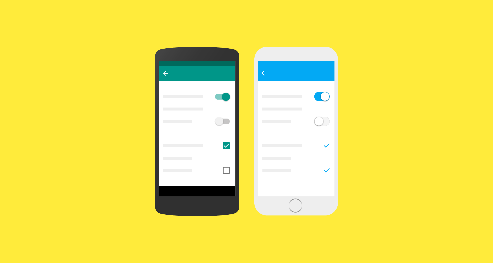

何时适配
Material Design 以传统设计和网页设计为基础，并依据用户体验研究和认知科学所创建的最佳范例。这份指南就是依据这些研究，致力于将其应用到所有的平台和设备上。
不同平台的设计惯例会不同。这些设计惯例的差异会影响用户对 UI 的理解，以及对完成某项操作。在这些情况下，建议只适配特定平台的设计惯例。在几乎不受设计差异影响的地方，可以自行决定是否适配。
下文将指导你何时必须适配原生的设计惯例，何时可选适配。平台设计惯例在不断的改进，Material Design 也在和它们一起发展，以提高我们的设计模式的质量。
